第一章 正点原子DAP 使用教程
之前所有正点原子 STM32 教程讲解的调试工具都是以JLINK 或者是ST-LINK 为例。由于性价比，缺芯等等因素呢，现在我们给大家介绍JTAG/SWD 调试工具中另外一个主流仿真器DAP 的使用方法，让大家在今后的 STM32 学习中，能熟练掌握 JTAG/SWD 调试配置方法。
如果你已经了解了JLINK 或者ST-Link 的使用方法，那么DAP 的使用方法将会非常简单，几乎99%的操作方法都是一模一样的。几乎所有JTAG/SWD 仿真器的使用都有下面三个方面的知识：
1、驱动的安装。
2、编程软件(MDK)配置。
3、固件升级方法
如果使用DAP 仿真器是不用安装驱动的，因为CMSIS DAP 是ARM 官方推出的开源仿真
器，具有免驱的特点。正点原子根据用户的不同需求，在普通的DAP 仿真器的基础上加上许多
不同的功能，速度上也有比普通的DAP 仿真器更快的产品，从而衍生了下面介绍的三款DAP
仿真器产品。
1.1 正点原子DAP 仿真器介绍
正点原子的DAP 仿真器可以分为有线和无线两种，根据速度可以分为普速和高速两种，结合这两个分类特点，总共推出了三种对应的DAP 仿真器产品，以满足不同客户应用场景不同的各种需求，大家可以根据自己的情况来选用不同的DAP 仿真器。用一个思维导图展示三种仿真器的关系，如图1.1.1 所示：
图1.1.1 正点原子DAP 仿真器分类
下面简单的介绍一下正点原子DAP 仿真器的特点：
1、支持MDK/IAR 编译器，无需驱动，不丢固件
2、支持Cortex M0/M1/M3/M4/M7 等内核ARM 芯片
3、支持仿真调试，支持代码下载、支持虚拟串口
4、提供20P 标准JTAG 接口、提供4P 简化SWD 接口
5、支持XP/WIN7/WIN8/WIN10 等操作系统
6、尺寸小巧，携带方便
以上6 个特点是这三种仿真器的共同特点，根据产品分类不同，它们还有其他的不同特点，
如高速DAP 仿真器还有以下特点：
7、支持 1.8V~5V 设备，自动检测
8、支持 1.8V/3.3V/5V 电源输出，需上位机设置
9、下载速度快，超越 jlink V9，接近 jlink V10
而高速无线调试器还有以下特点：
7、采用 2.4G 无线通信，自动跳频
8、支持 1.8V~5V 设备，自动检测
9、支持 1.8V/3.3V/5V 电源输出，需上位机设置，且小型接收端不支持
10、下载速度快，超越 JLINK V8，接近 JLINK V9
下面给大家介绍一下这三款仿真器的基本参数以及实物图。
1.1.1 DAP 仿真器
1.1.1.1 实物图
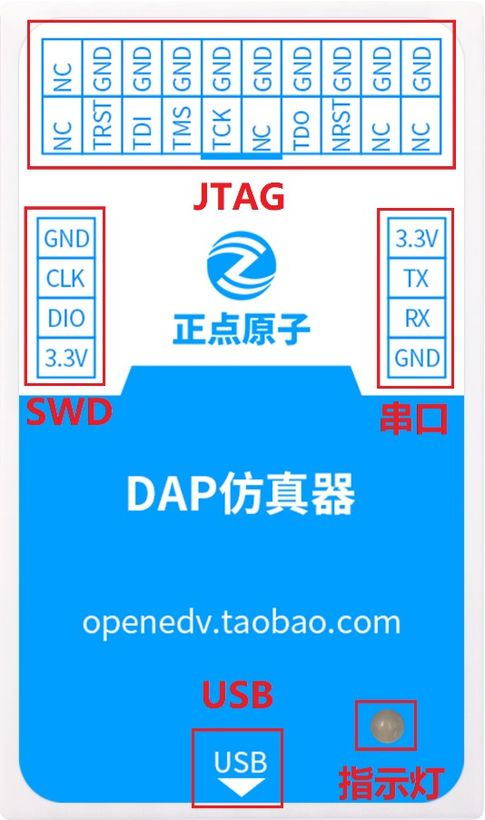
图1.1.1.1.1 DAP 仿真器实物图
1.1.1.2 基本参数
| 产品名称 | ATK-DAP 调试器 |
| 产品型号 | ATK-DAP |
| 支持芯片 | ARM Cortex M0/M1/M3/M4/M7 全系列 |
| 通信方式 | USB（免驱） |
| 仿真接口 | JTAG、SWD |
| 支持编译器 | MDK、IAR |
| 串口速度 | 460800bps（max） |
| 烧录速度 | 10M |
| 工作电压 | 5V（USB 供电） |
| 工作电流 | |
| 工作温度 | -40℃~+85℃ |
| 尺寸 | 66.5mm*40mm*17mm |
表1.1.1.2.1 DAP 仿真器基本参数
1.1.1.3 指示灯说明
| 状态 | 描述 |
|---|---|
| 蓝色 | 普通状态 |
| 红色 | 正在调试，并且 MCU 在运行状态 |
| 灭 | 异常情况 |
表1.1.1.3.1 DAP 仿真器指示灯说明
1.1.2 高速DAP 仿真器
1.1.2.1 实物图
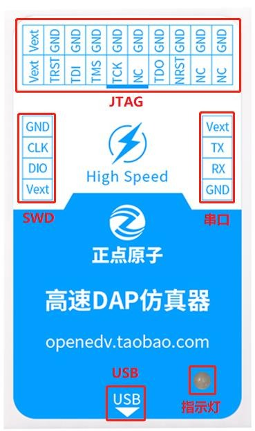
图1.1.2.1.1 高速DAP 仿真器实物图
1.1.2.2 基本参数
| 产品名称 | ATK-HSDAP 调试器 |
| 产品型号 | ATK-HSDAP |
| 支持芯片 | ARM Cortex M0/M1/M3/M4/M7 全系列 |
| 通信方式 | USB（免驱） |
| 仿真接口 | JTAG、SWD |
| 支持编译器 | MDK、IAR |
| 串口速度 | 1Mbps（max） |
| 烧录速度 | 10M |
| 工作电压 | 5V（USB 供电） |
| 工作电流 | 97mA |
| 工作温度 | -40℃~+85℃ |
| 尺寸 | 66.5mm*40mm*17mm |
表1.1.2.2.1 高速DAP 仿真器基本参数
1.1.2.3 指示灯说明
| 状态 | 描述 |
|---|---|
| 蓝色 | 普通状态 |
| 红色 | 正在调试，并且 MCU 在运行状态 |
| 红蓝色闪烁 | 一般在单步调试时，才会出现 |
| 灭 | 异常情况 |
表1.1.2.3.1 高速DAP 仿真器指示灯说明
1.1.3 高速无线调试器
1.1.3.1 实物图
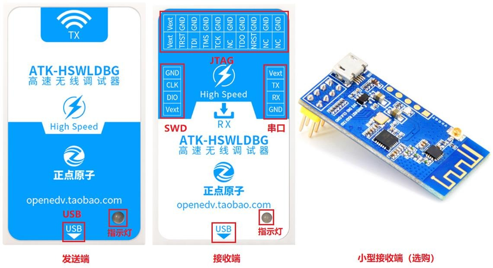
图1.1.3.1.1 高速无线调试器实物图
这里的使用组合可以是：发送端和接收端，或者发送端和小型接收端。
1.1.3.2 基本参数
| 产品名称 | ATK-HSWLDBG 高速无线调试器 |
| 产品型号 | ATK-HSWLDBG |
| 支持芯片 | ARM Cortex M0/M1/M3/M4/M7 全系列 |
| 通信方式 | USB（免驱） |
| 仿真接口 | JTAG、SWD |
| 支持编译器 | MDK、IAR |
| 串口速度 | 10Mbps（max） |
| 烧录速度 | 10M |
| 通信距离 | ≥10 米(使用 RXmin 端的时候，≥5 米) |
| TX 端工作电压 | 5V（USB 供电） |
| TX 端工作电流 | 151mA |
| RX 端工作电压 | 3.3V/5V(USB 或者 JTAG 或者 SWD 供电) |
| RX 端工作电流 | 132mA@5V |
| RXmin 端工作电压 | 3.3V/5V(USB 或者 JTAG 或者 SWD 供电) |
| RXmin 端工作电流 | 150mA@5V |
| 工作温度 | -40℃~+85℃ |
| 尺寸 | 66.5mm*40mm*17mm |
| RXmin 尺寸 | 40mm*20mm |
表1.1.3.2.1 高速无线调试器基本参数
1.1.3.3 指示灯说明
（1）发送端指示灯，说明如下表：
| 状态 | 描述 |
|---|---|
| 蓝色（蓝亮，红灭） | 发送端和接收端通信正确 |
| 红蓝色（蓝亮，红亮） | 正在进行下载、调试或者串口传输数据 |
| 蓝色闪烁（蓝闪，红灭） | 通信时断时续，可能可以正常使用 |
| 红蓝色闪烁（蓝亮，红闪） | 正在进行下载、调试或者串口传输数据 |
| 灭（蓝灭，红灭） | 通信中断，无法使用 |
| 红色闪烁（蓝灭，红闪） | 进入了更新模式 |
表1.1.3.3.1 高速无线调试器发送端指示灯说明
（2）接收端指示灯，说明如下表：
| 状态 | 描述 |
|---|---|
| 蓝色（蓝亮，红灭） | 发送端和接收端通信正确 |
| 红蓝色（蓝亮，红亮） | 正在调试，并且 MCU 在运行状态 |
| 蓝色闪烁（蓝闪，红灭） | 通信时断时续，可能可以正常使用 |
| 红蓝色闪烁（蓝亮，红闪） | 一般在单步调试时，才会出现 |
| 灭（蓝灭，红灭） | 通信中断，无法使用 |
| 红色闪烁（蓝灭，红闪） | 进入了更新模式 |
表1.1.3.3.2 高速无线调试器接收端指示灯说明
1.1.3.4 工作原理示意图
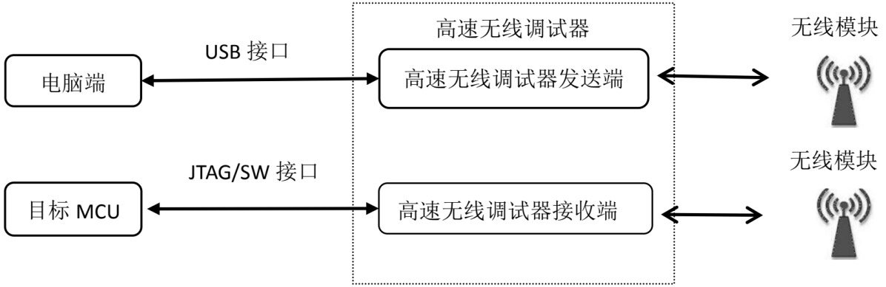
图1.1.3.4.1 高速无线调试器工作原理示意图
1.1.3.5 接线示意图
高速无线调试器发送端，接线图：
图1.1.3.5.1 发送端接线示意图
高速无线调试器接收端，JTAG/SWD 接口供电，接线示意图：
图1.1.3.5.2 接收端接线示意图
高速无线调试器接收端，USB 接口供电，接线示意图：
图1.1.3.5.3 接收端用USB 接口供电接线示意图
1.2 MDK 配置教程
1.2.1 正确连接好仿真器
1.2.1.1 DAP 仿真器的连接
（1）通过USB 线把DAP 仿真器和电脑连接起来。（2）通过JTAG 接口或者SWD 接口，连接上目标MCU。
如下图所示，注意指示灯必须是蓝色常亮。
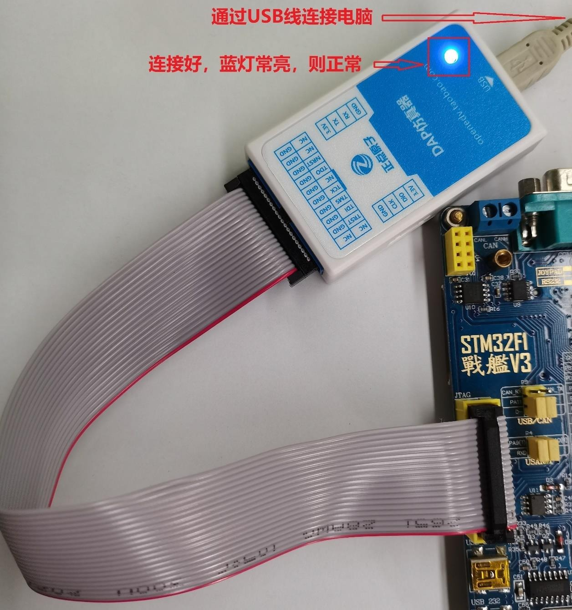
图1.2.1.1.1 DAP 仿真器连接示意图
注意：DAP 仿真器不对外输出电压的，所以需要给目标板子另外供电。
1.2.1.2 高速DAP 仿真器的连接
（1）通过USB 线把高速DAP 仿真器和电脑连接起来。（2）通过JTAG 接口或者SWD 接口，连接上目标MCU。
如下图所示，注意指示灯必须是蓝色常亮。
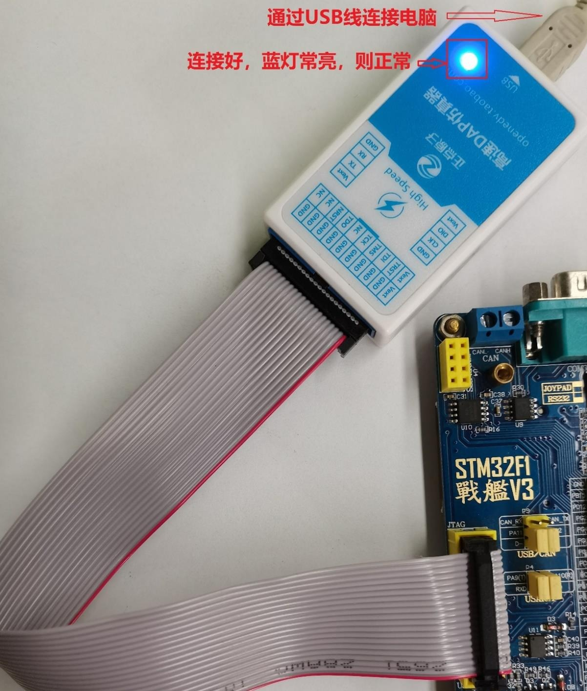
图1.2.1.2.1 高速DAP 仿真器连接示意图
注意：高速DAP 仿真器可以对外输出电压，所以下载调试程序的时候，目标板子可以不用接电源，但是一般不建议。因为高速DAP 仿真器对外的承载能力有限，对于有大电流需求的目标，会驱动不起来，容易造成不稳定，所以建议还是给目标板子另外供电。
1.2.1.3 高速无线调试器的连接
（1）通过USB 线把高速无线调试器的发送端和电脑连接起来。（2）高速无线调试器的接收端通过JTAG 接口或者SWD 接口，连接上目标MCU。
如下图所示，注意发送端和接收端的指示灯必须是蓝色常亮。
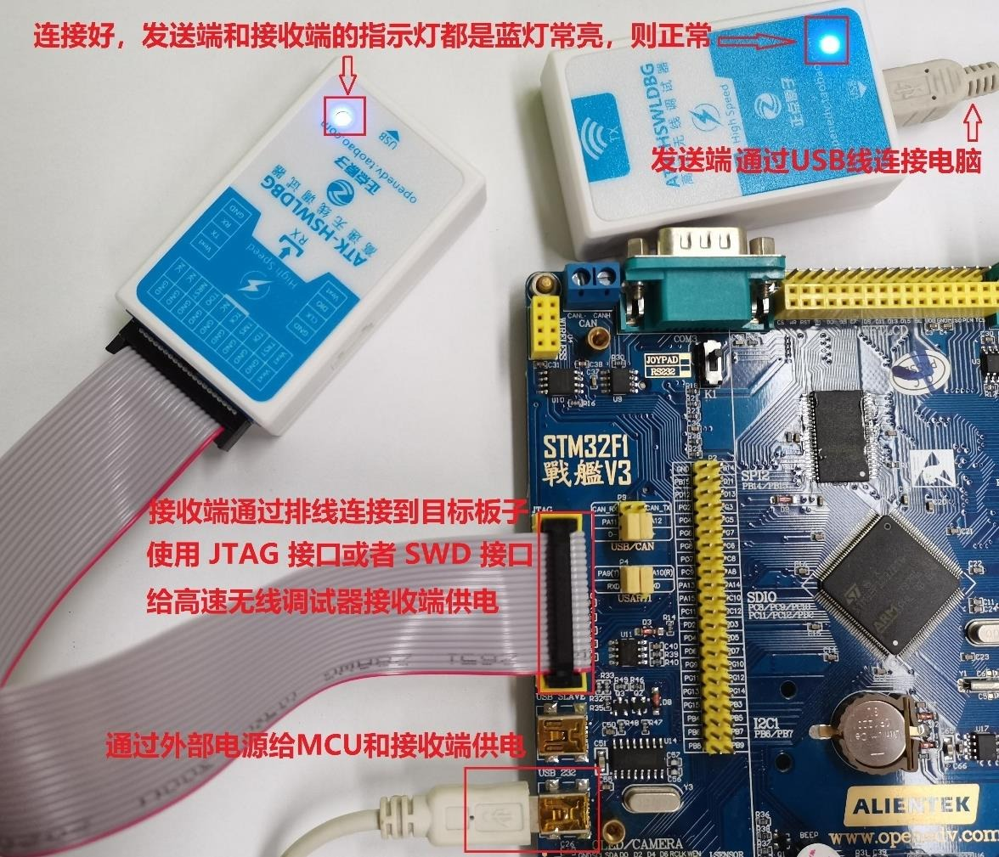
图1.2.1.3.1 高速无线调试器连接示意图
还可以通过高速无线调试器接收端给目标板子供电，如下图所示：
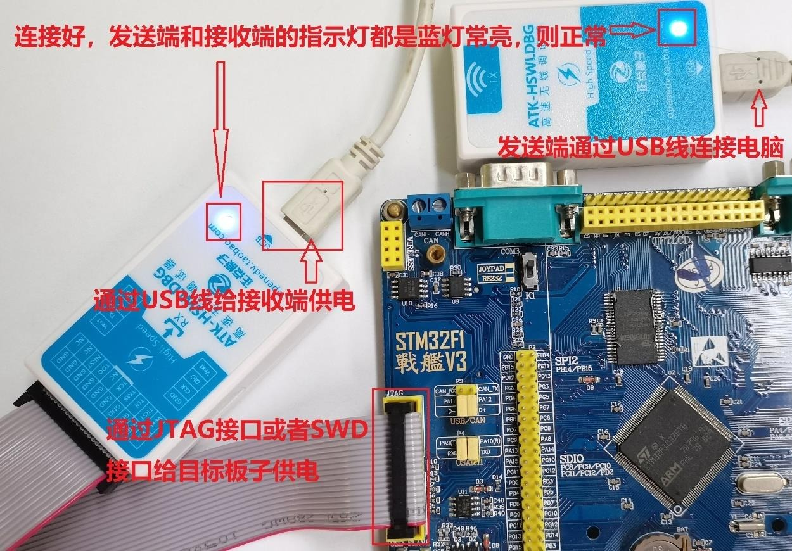
图1.2.1.3.2 高速无线调试器接收端给目标板子供电连接示意图
注意：高速无线调试器接收端可以对外输出电压，所以下载调试程序的时候，目标板子可
以不用接电源，但是一般不建议。因为高速无线调试器接收端对外的承载能力有限，对于有大电流需求的目标，会驱动不起来，容易造成不稳定，所以建议还是给目标板子另外供电。
1.2.2 配置MDK
注意：低版本MDK 对DAP 仿真器、高速DAP 仿真器和高速无线调试器的支持不完善，推荐使用MDK5.23 以上的版本。
在MDK5.23~MDK5.26 编译环境下，高速DAP 仿真器和高速无线调试器对部分芯片支持有bug，必须打补丁。请参考路径：【正点原子】DAP 仿真器【高速版】ATK-HSDAP 资料\3，MDK&IAR bug 解决办法\mdk 的bug 解决方法解决，或者参考路径【正点原子】无线调试器【高速版】ATL-HSWLDBG 资料\mdk 补丁。
下面开始对MDK 进行配置，来选择使用DAP 仿真器。如果你之前使用的是ST-Link，那么只需要修改下列2 个地方的配置就可以变成用DAP 仿真器。
首先是选择调试器，如果要使用的是DAP，点击魔术棒，在 Debug 选项卡中，请按照
图1.2.1 操作来选择“CMSIS-DAP Debugger”，如果要选择其他的调试器也是在这里选择。比如
要用JLINK，那么需要选择“J-LINK/J-Trace Cortex”，用ST-Link 则选择“ST-Link Debugger”。
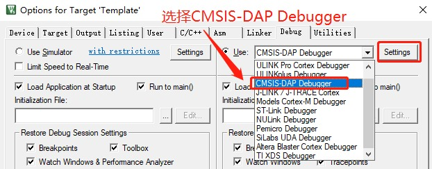
图1.2.2.1 选择CMSIS-DAP Debugger
选择好调试器之后，点击图中框的Settings，设置DAP 的一些参数，这里首先介绍设置为SWD 模式调试配置方法，如图1.2.2.2 所示。
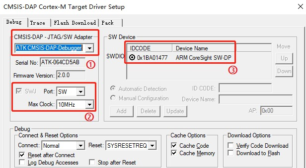
图1.2.2.2 SWD 模式DAP 仿真器参数设置
① 表示 MDK 找到了 ATK CMSIS-DAP 仿真器，如果这里显示为空，则表示没有仿真器被找到，请检查你的电脑是否接了仿真器？
② 设置接口方式，这里选择SW，通信速度设置为 10Mhz（实际上大概只有4M 的速度，MDK 会自动匹配）。如果不能正常工作，可以尝试调低一些速度。
③ 表示MDK 通过仿真器的SW 接口找到了目标芯片，ID 为：0x1BA01477。如果这里显示：No target connected，则表示没找到任何器件，请检查仿真器和开发板连接是否正常？开发板是否供电了？
其他部分使用默认设置，设置完成以后单击“确定”按钮，完成此部分设置。一般我们建议用SWD 模式，因为JTAG 模式和SWD 模式使用方法都是一样的，不同的是，SWD 接口调试更加节省IO 端口。
如果要选择JTAG 模式调试对应的配置方法，如图1.2.2.3 所示。
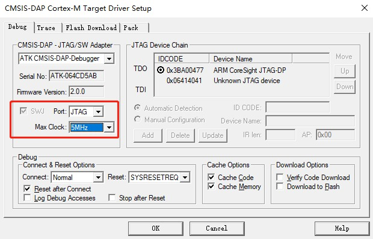
图1.2.2.3 JTAG 模式DAP 仿真器参数设置
如上图所示，我们只需要在红框中的Port 里下拉选择JTAG，就选择了JTAG 模式，通信速度设置为5Mhz 即可，一般在1~5M 之前。如果不能正常工作，可以尝试调低一些速度。
最后，我们需要在Utilities 选项卡里面设置下载时的目标编程器，如图1.2.2.4 所示。
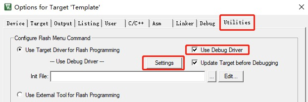
图1.2.2.4 FLASH 编程器选择
图1.2.4 中，我们直接勾选 Use Debug Driver，即和调试一样，选择DAP 来给目标器件的
FLASH 编程，然后点击Settings，进入FLASH 算法设置，设置如图1.2.2.5 所示。
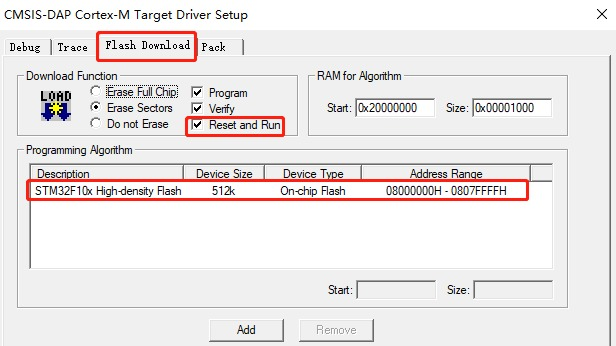
图1.2.2.5 FLASH 算法设置
这里我们使用的是战舰开发板的例程为例，芯片型号为STM32F103ZET6，FLASH 容量为512K 字节，所以Programming Algorithm 里面默认会有512K 型号的STM32F10x High-densityFlash 算法。如果大家用的是其他开发板，这里没有flash 算法，大家可以点击 Add 按钮，自行添加即可。如果是北极星开发板例程，还要添加正点原子提供的算法，设置RAM for Algorithm栏的算法大小，这个大家参考对应的教程添加即可。最后，选中 Reset and Run 选项，以实现在编程后自动运行，不需要按复位键，其他默认设置即可。
到这里，DAP 仿真器的配置就完成了，其他配置和ST-Link 没什么区别，大家看对应的开发板教程即可。
1.3 DAP 固件升级
1.3.1 DAP 仿真器固件更新
注意：如果更新失败，请检查电脑网络连接是否正常，因为服务器连接不好会导致更新失败，请多尝试几遍。
首先通过USB 线，把DAP 仿真器连接到电脑，注意指示灯蓝灯常亮，表示正常。然后打开“ATK-DAP 配置软件”最后在配置软件上按照下面几个步骤进行更新。
（1）点击“刷新”，扫描设备。
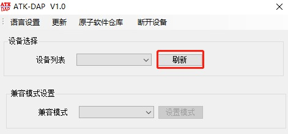
图1.3.1.1 点击“刷新”，扫描设备
（2）设备被成功扫描出来，然后点击“更新”。
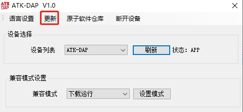
图1.3.1.2 点击“更新”
（3）点击“开始更新”。
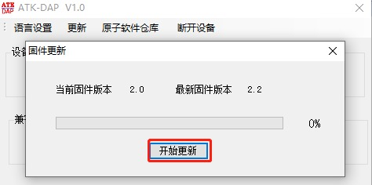
图1.3.1.3 点击“开始更新”
（4）更新成功后，点击“确认”。
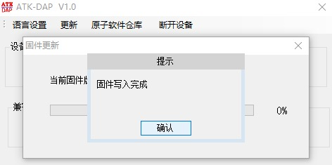
图1.3.1.4 固件写入完成，点击“确认”
更新成功，如下图1.3.1.4 所示。其他提示，均为失败了。如果失败了，按照步骤重试一下，还是失败，请联系我们。
（5）点击“断开设备”。
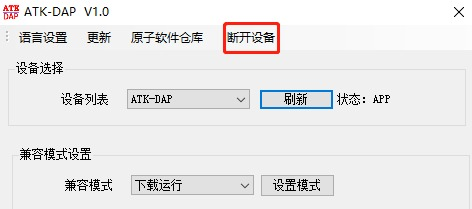
图1.3.1.5 断开设备
完成了配置软件的使用后，要点击“断开设备”，以便MDK 等IDE 使用。
1.3.2 高速DAP 仿真器固件更新
首先通过USB 线，把高速DAP 仿真器连接到电脑，注意指示灯蓝灯常亮，表示正常。然后打开“高速dap 配置软件”最后在配置软件上按照下面几个步骤进行更新。
（1）点击“刷新图标”，扫描设备。
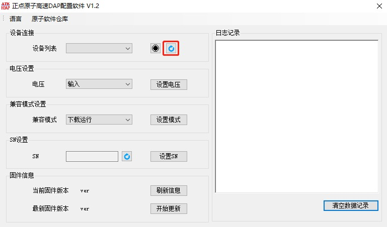
图1.3.2.1 点击刷新图标，扫描设备
（2）查看设备是否被成功扫描出来，如果成功如下图所示。

图1.3.2.2 设备被成功扫描
（3）点击“开始更新”。
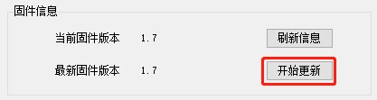
图1.3.2.3 点击“开始更新”
（4）更新成功后，点击“确认”。
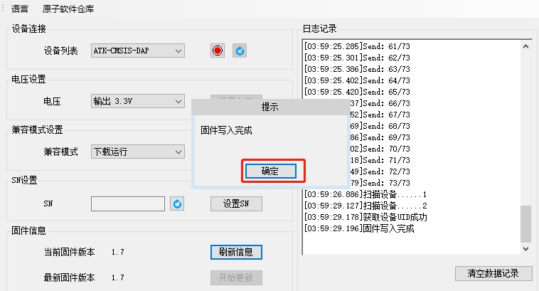
图1.3.2.4 固件写入完成，点击“确认”
更新成功，如下图1.3.1.4 所示。其他提示，均为失败了。如果失败了，按照步骤重试一下，还是失败，请联系我们。
（5）点击“断开设备图标”。
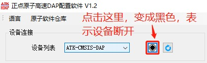
图1.3.2.5 点击“断开设备图标”
完成了配置软件的使用后，要点击“断开设备”，以便MDK 等IDE 使用。
1.3.3 高速无线调试器固件更新
首先通过两条USB 线，分别把高速无线调试器的发送端TX 和接收端RX 都连接到电脑，注意发送端和接收端的指示灯都是蓝灯常亮，表示正常。如果连接的是发送端和小型接收端，小型接收端是绿灯常亮，发送端蓝灯常亮。然后打开“高速无线调试器配置软件”最后在配置软件上按照下面几个步骤进行更新。
（1）点击“刷新图标”，扫描设备。
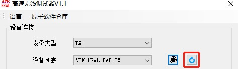
图1.3.3.1 点击刷新图标，扫描设备
（2）查看设备是否被成功扫描出来，如果成功如下图所示。

图1.3.3.2 设备被成功扫描
如果设备没有连接成功，检测一下发送端TX 和接收端RX 是否都连接到电脑了。（3）选择要更新的设备。
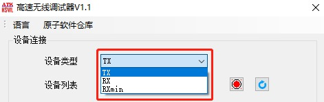
图1.3.3.3 选择要更新的设备
如图1.3.3.3 所示，总共有三个可以选择的设备，由上往下分别是：TX（发送端）、RX（接收端）、RXmin（小型接收端）。使用的时候可以有两种组合，发送端和接收端，以及发送端和小型接收端，这两种组合都可以下载调试程序。更新固件的时候，这三个设备是要分开更新的。比如首先更新TX（发送端）的固件，那么就下拉选择TX。
（4）点击“开始更新”。
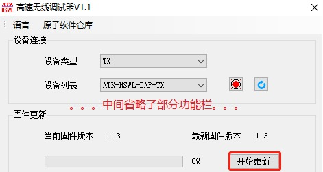
图1.3.3.4 点击“开始更新”
（5）更新成功后，点击“确认”。
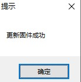
图1.3.3.5 更新固件成功，点击“确认”
更新成功，如下图1.3.4.5 所示。其他提示，均为失败了。如果失败了，按照步骤重试一下，还是失败，请联系我们。
更新成功后，如果还需要更新其它两个设备，下拉设备类型栏选择其它两个设备中的一个，然后继续点击“开始更新”，等待更新完成即可。然后再把最后一个设备也按照此方法更新。
（6）点击“断开设备的图标”。
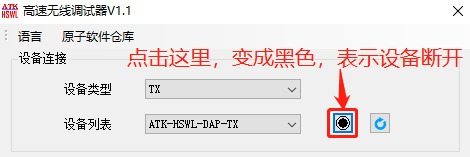
图1.3.3.6 点击“断开设备的图标”
完成了配置软件的使用后，要点击“断开设备”，以便MDK 等IDE 使用。
1.4 复位兼容模式设置
注意：产品出厂前配置好了相关参数，一般无须配置。出厂值为：下载运行。
| 兼容模式参数 | 描述 | 备注 |
|---|---|---|
| 下载运行 | 不接NRST 引脚，MDK 也能下载自动运行 | 可能影响稳定性 |
| 普通 | 不接NRST 引脚，MDK 不能下载自动运行 | 更好的稳定性 |
表1.4.1 DAP 仿真器兼容模式说明
上表列出兼容模式的参数说明，下面分别介绍每个DAP 仿真器的复位兼容模式设置方法。
1.4.1 DAP 仿真器设置方法
首先通过USB 线，把DAP 仿真器连接到电脑，注意指示灯蓝灯常亮，表示正常。然后打开“ATK-DAP 配置软件”最后在配置软件上按照下面几个步骤进行设置。
（1）点击“刷新”，扫描设备。
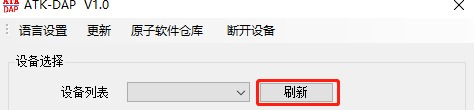
图1.4.1.1 点击“刷新”，扫描设备
（2）设备被成功扫描出来，如下图两个红色框框所示。
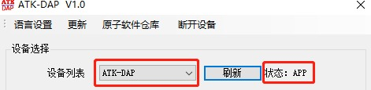
图1.4.1.2 查看扫描是否成功
（3）选择兼容模式参数，并设置。
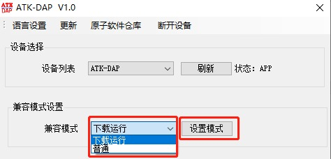
图1.4.1.3 选择兼容模式参数，并设置
在兼容模式栏，下拉选择“下载运行”或者“普通”，然后点击“设置模式”。（4）设置兼容模式成功后，点击“确认”。
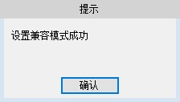
图1.4.1.4 点击“确认”
（5）点击“断开设备”。
图1.4.1.5 断开设备
完成了配置软件的使用后，要点击“断开设备”，以便MDK 等IDE 使用。
1.4.2 高速DAP 仿真器设置方法
首先通过USB 线，把高速DAP 仿真器连接到电脑，注意指示灯蓝灯常亮，表示正常。然后打开“高速dap 配置软件”最后在配置软件上按照下面几个步骤进行设置。
（1）点击“刷新图标”，扫描设备。
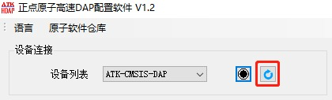
图1.4.2.1 点击“刷新图标”，扫描设备
（2）设备被成功扫描出来，如下图两个红色框框所示。

图1.4.2.2 查看扫描是否成功
（3）选择兼容模式参数，并设置。
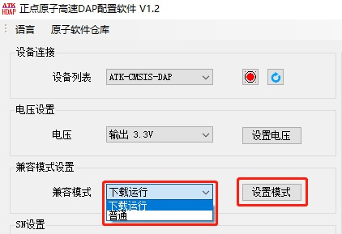
图1.4.2.3 选择兼容模式参数，并设置
在兼容模式栏，下拉选择“下载运行”或者“普通”，然后点击“设置模式”。（4）设置兼容模式成功后，点击“确认”。

图1.4.2.4 点击“确认”
（5）点击“断开设备图标”。

图1.4.2.5 断开设备
完成了配置软件的使用后，要点击“断开设备图标”，以便MDK 等IDE 使用。
1.4.3 高速无线调试器设置方法
首先通过两条USB 线，分别把高速无线调试器的发送端TX 和接收端RX 都连接到电脑，注意发送端和接收端的指示灯都是蓝灯常亮，表示正常。如果连接的是发送端和小型接收端，小型接收端是绿灯常亮，发送端蓝灯常亮。然后打开“高速无线调试器配置软件”最后在配置软件上按照下面几个步骤进行设置。
（1）点击“刷新图标”，扫描设备。

图1.4.3.1 点击刷新图标，扫描设备
（2）查看设备是否被成功扫描出来，如果成功如下图所示。

图1.4.3.2 设备被成功扫描
如果设备没有连接成功，检测一下发送端TX 和接收端RX 是否都连接到电脑了。（3）选择要设置的设备。

图1.4.3.3 选择要更新的设备
如图1.4.3.3 所示，总共有三个可以选择的设备，由上往下分别是：TX（发送端）、RX（接收端）、RXmin（小型接收端）。这里我们只能对RX（接收端）或者RXmin（小型接收端）进行复位兼容模式设置，TX（发送端）是不需要设置的。比如设置RX（接收端），那么就下拉选择
RX 即可。
（4）选择兼容模式参数，并设置。
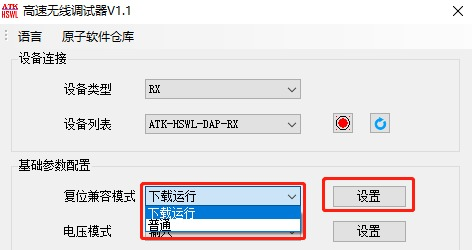
图1.4.3.4 选择兼容模式参数，并设置
在复位兼容模式栏，下拉选择“下载运行”或者“普通”，然后点击“设置”。（5）设置兼容模式成功后，点击“确认”。
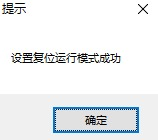
图1.4.3.5 点击“确认”
（6）点击“断开设备图标”。

图1.4.3.6 点击“断开设备图标”
完成了配置软件的使用后，要点击“断开设备”，以便MDK 等IDE 使用。
1.5 电压模式设置
DAP 仿真器不支持电压输出，所以它是没有电压模式设置功能。高速DAP 仿真器和高速无线调试器都支持电压输出，所以该功能是针对这两者设置使用的。但是它们的电压输出有差异的地方，请继续往下阅读。
1.5.1 高速DAP 仿真器
1.5.1 高速DAP 仿真器输出电压说明
注意：所有Vext 引脚都是相连的，出厂前配置好了相关参数，一般无须配置。出厂值为：输出3.3V。
| 电压设置 | 描述 | 备注 |
|---|---|---|
| 输入 | 没有电压输出，可以根据目标MCU的电压适配 1.8V~5V 工作电压范围 | 串口使用需要提供电压输入才能正常工作 |
| 输出1.8V | 输出 1.8V 如果检测到电源电路，会切换到输出 0V | 检测电源短路，所有 IO 引脚电压变为 1.8V |
| 输出3.3V | 输出 3.3V 如果检测到电源电路，会切换到输出 0V | 检测电源短路，所有 IO 引脚电压变为 3.3V |
| 输出5V | 输出 5V 如果检测到电源电路，会切换到输出 0V | 这个检测短路功能不可靠 |
| 强制1.8V | 输出 1.8V | 不检测电源短路，用户需要注意电压是否匹配，所有 IO 引脚电压变为 1.8V |
| 强制3.3V | 输出 3.3V | 不检测电源短路，用户需要注意电压是否匹配，所有 IO 引脚电压变为 3.3V |
| 强制5V | 输出 5V | 不检测电源短路，用户需要注意电压是否匹配，所有 IO 引脚电压变为 5V |
表1.5.1.1 DAP 仿真器输出电压说明
1.5.2 高速DAP 仿真器输出电压设置方法
首先通过USB 线，把高速DAP 仿真器连接到电脑，注意指示灯蓝灯常亮，表示正常。然后打开“高速dap 配置软件”最后在配置软件上按照下面几个步骤进行设置。
（1）点击“刷新图标”，扫描设备。

图1.5.2.1 点击“刷新图标”，扫描设备
（2）设备被成功扫描出来，如下图两个红色框框所示。

图1.5.2.2 查看扫描是否成功
（3）选择电压参数，并设置。
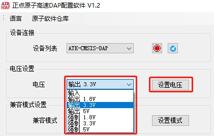
图1.5.2.3 选择兼容模式参数，并设置
在电压栏，下拉选择，这里以“输出3.3V”为例，然后点击“设置电压”。（4）设置电压成功后，点击“确认”。
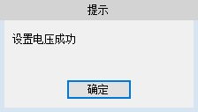
图1.5.2.4 点击“确认”
（5）点击“断开设备图标”。

图1.5.2.5 断开设备
完成了配置软件的使用后，要点击“断开设备图标”，以便MDK 等IDE 使用。
1.5.2 高速无线调试器
1.5.1 高速无线调试器输出电压说明
注意：所有Vext 引脚都是相连的，出厂前配置好了相关参数，一般无须配置。出厂值为：输入。小型接收端只支持3.3V 工作电压，不支持配置其他值。
| 电压设置 | 描述 | 备注 |
|---|---|---|
| 输入 | 没有电压输出，可以根据 Vext 引脚的电压适配 1.8V~5V 工作电压范围 | 串口或者 SWD 接 3 线的时候，需要在 Vext 引脚提供电压输入才能正常工作 |
| 输出1.8V | 上电时，Vext 引脚输出 1.8V，并且所有 IO 引脚高电平电压变为 1.8V 电压 | 用户需要注意电压是否匹配 |
| 输出3.3V | 上电时，Vext 引脚输出 3.3V，并且所有 IO 引脚高电平电压变为 3.3V 电压 | 用户需要注意电压是否匹配 |
| 输出5V | 上电时，Vext 引脚输出 5V，并且所有 IO 引脚高电平电压变为 5V 电压 | 用户需要注意电压是否匹配 |
表1.5.1.1 DAP 仿真器输出电压说明
电压输出能力如下图所示：
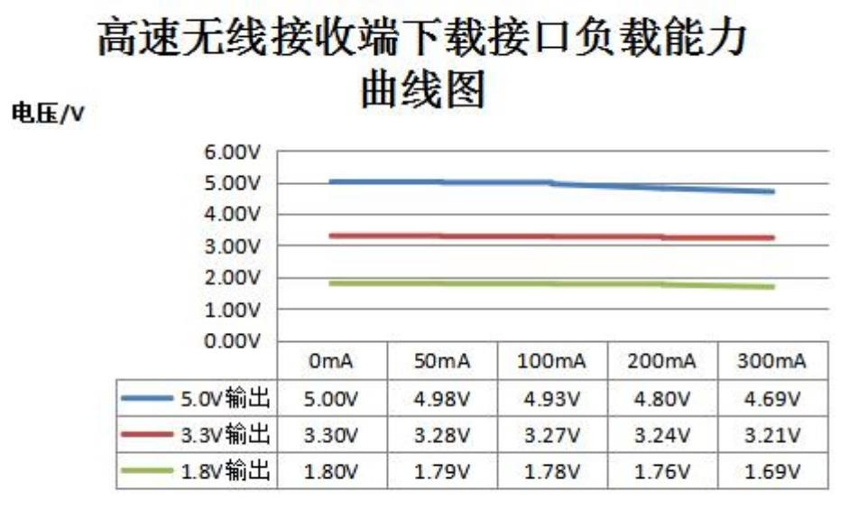
图1.5.1.1 电压输出能力
1.5.2 高速无线调试器输出电压设置方法
首先通过两条USB 线，分别把高速无线调试器的发送端TX 和接收端RX 都连接到电脑，注意发送端和接收端的指示灯都是蓝灯常亮，表示正常。然后打开“高速无线调试器配置软件”最后在配置软件上按照下面几个步骤进行设置。
（1）点击“刷新图标”，扫描设备。

图1.5.2.1 点击刷新图标，扫描设备
（2）查看设备是否被成功扫描出来，如果成功如下图所示。

图1.5.2.2 设备被成功扫描
如果设备没有连接成功，检测一下发送端TX 和接收端RX 是否都连接到电脑了。（3）选择要配置的设备。

图1.5.2.3 选择要配置的设备
这里我们只能选择RX 进行配置，另外两个都不支持配置输出电压。（4）选择电压模式参数，并设置。
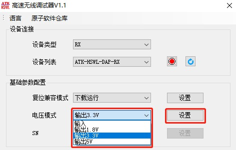
图1.5.2.4 选择兼容模式参数，并设置
在电压模式栏，下拉选择需要配置的电压模式，然后点击“设置”。（5）设置电压模式成功后，点击“确认”。
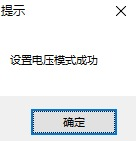
图1.5.2.5 点击“确认”
（6）点击“断开设备图标”。

图1.5.2.6 点击“断开设备图标”
完成了配置软件的使用后，要点击“断开设备”，以便MDK 等IDE 使用。
1.6 序列号（SN）设置
DAP 仿真器不支持序列号设置，高速DAP 仿真器需要固件版本 1.4 及以上（配置软件 1.1以上）才支持序列号设置，高速无线调试器只有发送端可以设置序列号。
大多数用户都是不需要用到序列号设置这个功能的，该功能主要是针对用户在一台电脑连接多个高速DAP 仿真器或者高速无线调试器，导致下载程序时，MDK 无法判断用哪个仿真器进行下载，从而出现问题，因为出厂时仿真器的序列号是一样的。如果使用一台电脑使用多个仿真器，请先给每个仿真器设置不同的序列号，方法如下。
1.6.1 高速DAP 仿真器SN 设置方法
首先通过USB 线，把高速DAP 仿真器连接到电脑，注意指示灯蓝灯常亮，表示正常。然后打开“高速dap 配置软件”最后在配置软件上按照下面几个步骤进行设置。
（1）点击“刷新图标”，扫描设备。

图1.6.1.1 点击“刷新图标”，扫描设备
（2）设备被成功扫描出来，如下图两个红色框框所示。
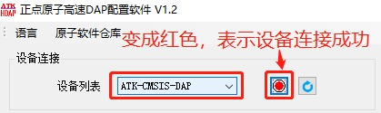
图1.6.1.2 查看扫描是否成功
（3）刷新序列号，然后点击“设置SN”。
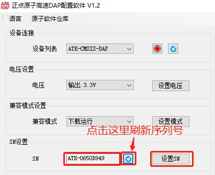
图1.6.1.3 刷新序列号，并设置
（4）设置SN 成功后，点击“确认”。
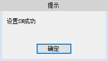
图1.6.1.4 点击“确认”
（5）点击“断开设备图标”。

图1.6.1.5 断开设备
完成了配置软件的使用后，要点击“断开设备图标”，以便MDK 等IDE 使用。按照上面的方法，我们给仿真器设置了不同的序列号，怎么使用呢？举个例子，这里我们在一台电脑上连接了两个高速DAP 仿真器，并且这两个仿真器连接在两块不同的板子上。我们用MDK 怎么指定我们的工程程序下载到哪个板子上呢？方法如下。
按照上述连接好两块板子后，我们点击魔术棒，按照下图的步骤进行操作。
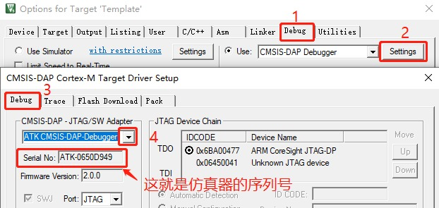
图1.6.1.6 查看仿真器序列号
通过这个序列号我们就知道我们这个工程选择了哪个仿真器进行下载仿真的。如果要选择另外一个仿真器，通过上图中步骤4 下拉进行选择。比如现在这个仿真器的序列号为：ATK-0650D949，我们选择另外一个看看，操作如下图所示。
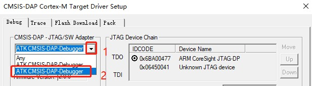
图1.6.1.7 选择不同的仿真器
另一个仿真器的序列号如下图所示。
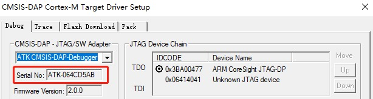
图1.6.1.7 选择不同的仿真器
可以看到我们选择另外一个仿真器的序列号为ATK-064CD5AB。这些序列号我们可以通过上位机设置。
1.6.2 高速无线调试器SN 设置方法
首先通过两条USB 线，分别把高速无线调试器的发送端TX 和接收端RX 都连接到电脑，注意发送端和接收端的指示灯都是蓝灯常亮，表示正常。如果连接的是发送端和小型接收端，小型接收端是绿灯常亮，发送端蓝灯常亮。然后打开“高速无线调试器配置软件”最后在配置软件上按照下面几个步骤进行设置。
（1）点击“刷新图标”，扫描设备。

图1.6.2.1 点击刷新图标，扫描设备
（2）查看设备是否被成功扫描出来，如果成功如下图所示。
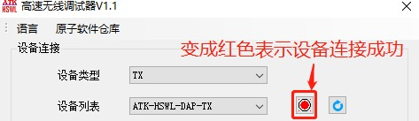
图1.6.2.2 设备被成功扫描
如果设备没有连接成功，检测一下发送端TX 和接收端RX 是否都连接到电脑了。（3）选择要配置的设备。
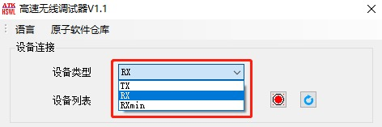
图1.6.2.3 选择要配置的设备
这里我们只能选择TX 进行配置，另外两个都不需要配置，也不支持配置SN。（4）刷新序列号，然后点击“设置”。
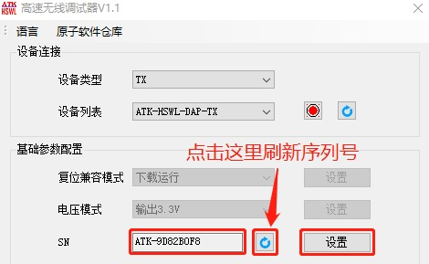
图1.6.2.4 刷新序列号，并设置
（5）设置SN 成功后，点击“确认”。
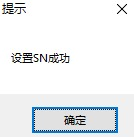
图1.6.2.5 点击“确认”
（6）点击“断开设备图标”。

图1.6.2.6 点击“断开设备图标”
完成了配置软件的使用后，要点击“断开设备”，以便MDK 等IDE 使用。
1.7 高速无线调试器无线参数
1.7.1 高速无线调试器无线参数说明
注意：产品出厂前配置好了相关参数，一般无须配置。
| 参数 | 描述 | 备注 |
|---|---|---|
| 频率模式 | 发送端和接收端通信的频率模式 | 发送端和接收端必须相同，默认“自动”频率模式 |
| 频率 | 发送端和接收端通信的频率，只在手动频率模式下有用 | 发送端和接收端必须相同 |
| ID | 发送端和接收端通信的识别 ID | 发送端和接收端必须相同 |
| 包大小 | 发送端和接收端通信的单个包的最大大小 | 发送端和接收端必须相同，默认“小包”模式 |
表1.7.1.1 高速无线调试器无线参数说明
频率模式说明
| 频率模式 | 描述 | 备注 |
|---|---|---|
| 自动频率 | 自动选择无线通信频率 | 最多可以5 个高速无线调试器一起工作 |
| 手动频率 | 手动固定无线通信频率 | 范围 2406MHz~2480MHz，由频率参数指定 |
表1.7.1.2 频率模式说明
包大小说明
| 包大小 | 描述 | 备注 |
|---|---|---|
| 大包 | 无线通信时，使用大包 | 在所有包大小选项中，无线传输速度最快，但是稳定性最差 |
| 中包 | 无线通信时，使用中包 | 在所有包大小选项中，无线传输速度适中，稳定性适中 |
| 小包 | 无线通信时，使用小包 | 在所有包大小选项中，无线传输速度最慢，但是稳定性最好 |
表1.7.1.3 包大小说明
1.7.2 高速无线调试器无线参数配置
1.7.2.1 自动频率模式配置
首先通过两条USB 线，分别把高速无线调试器的发送端TX 和接收端RX 都连接到电脑，注意发送端和接收端的指示灯都是蓝灯常亮，表示正常。如果连接的是发送端和小型接收端，小型接收端是绿灯常亮，发送端蓝灯常亮。然后打开“高速无线调试器配置软件”最后在配置软件上按照下面几个步骤进行设置。
（1）点击“刷新图标”，扫描设备。

图1.7.2.1.1 点击刷新图标，扫描设备
（2）查看设备是否被成功扫描出来，如果成功如下图所示。

图1.7.2.1.2 设备被成功扫描
如果设备没有连接成功，检测一下发送端TX 和接收端RX 是否都连接到电脑了。（3）选择要配置的设备。

图1.7.2.1.3 选择要配置的设备
（4）设置选择无线参数，并设置。
图1.7.2.1.4 刷新序列号，并设置
注意：发送端TX 和接收端RX，或者发送端TX 和小型接收端Rxmin 的频率模式、ID 和包大小要设置为一样的，否则通信会失败。
这里如果我们设置了自动模式，那么发送端TX 和接收端RX，或者发送端TX 和小型接收端Rxmin 都必须一起设置为自动。当然ID 和包大小也不用每次都设置，只要保证发送端和接收端，或发送端和小型接收端一样就行。
（5）设置无线参数成功后，点击“确认”。

图1.7.2.1.5 点击“确认”
比如这里我们设置好TX，那么RX 和Rxmin 的设置很简单，只需要在图1.7.2.1.3 中的设备类型栏选择RX 或者Rxmin，然后再点击图1.7.2.1.4 中的设置参数即可。这样发送端TX 和接收端RX，或者发送端TX 和小型接收端Rxmin 的参数就可以设置为一样的。
（6）点击“断开设备图标”。

图1.7.2.1.6 点击“断开设备图标”
完成了配置软件的使用后，要点击“断开设备”，以便MDK 等IDE 使用。
1.7.2.2 手动频率模式配置
首先通过两条USB 线，分别把高速无线调试器的发送端TX 和接收端RX 都连接到电脑，注意发送端和接收端的指示灯都是蓝灯常亮，表示正常。如果连接的是发送端和小型接收端，小型接收端是绿灯常亮，发送端蓝灯常亮。然后打开“高速无线调试器配置软件”最后在配置软件上按照下面几个步骤进行设置。
（1）点击“刷新图标”，扫描设备。

图1.7.2.2.1 点击刷新图标，扫描设备
（2）查看设备是否被成功扫描出来，如果成功如下图所示。

图1.7.2.2.2 设备被成功扫描
如果设备没有连接成功，检测一下发送端TX 和接收端RX 是否都连接到电脑了。（3）选择要配置的设备。

图1.7.2.2.3 选择要配置的设备
（4）设置选择无线参数，并设置。
图1.7.2.2.4 刷新序列号，并设置
注意：发送端TX 和接收端RX，或者发送端TX 和小型接收端Rxmin 的频率模式、频率、ID 和包大小要设置为一样的，否则通信会失败。
（5）设置无线参数成功后，点击“确认”。
图1.7.2.2.5 点击“确认”
比如这里我们设置好TX，那么RX 和Rxmin 的设置很简单，只需要在图1.7.2.2.3 中的设备类型栏选择RX 或者Rxmin，然后再点击图1.7.2.2.4 中的设置参数即可。这样发送端TX 和接收端RX，或者发送端TX 和小型接收端Rxmin 的参数就可以设置为一样的。
（6）点击“断开设备图标”。
图1.7.2.2.6 点击“断开设备图标”
完成了配置软件的使用后，要点击“断开设备”，以便MDK 等IDE 使用。
1.8 串口使用
1.8.1 串口功能说明
如相关实物示意图所示，这里介绍的三款仿真器都是有虚拟串口的。
注意：串口的使用是必须接入Vext，并且只支持 8 位数据位。
在串口打开的时候，如果正在使用dap 功能，注意配置软件也是在使用dap 功能，可能会
导致重新插上之后串口无法使用。
解决方法：
1、把高速 dap 所有相关的软件关闭，把高速 dap 在电脑上拔出来，
2、把串口助手打开和关闭，连续 3 次。
3、再重新插上高速 dap。正常情况可以继续使用串口功能。
4、如果还是不行只能重启电脑。
无线调试器的串口也是无线的，需要配合发送端使用。无线调试器串口数据发送过程如下：
电脑->TX 端->无线->RX 端->RX 端的串口引脚
接收过程则路径相反。
1.8.2 虚拟串口驱动安装
一般电脑在联网的状态会自动安装串口驱动。如果没有，请按照“串口驱动/串口驱动安装教程.pdf”安装。
1.9 读保护设置
MDK 等IDE 不支持DAP 仿真器、高速DAP 仿真器和无线调试器解除flash 读保护，这里提供一个读保护设置软件。注意如果在固件中设置了flash 读保护，有些情况下无法下载自动运行，得把 mcu 断电重启。
现在支持的芯片系列：STM32F1xx（不包含 xl 系列）、STM32F2xx、STM32F4xx
读保护等级说明：
LEVEL_0：没有读保护
LEVEL_1: 对应芯片的 LEVEL1 等级读保护
设置步骤：
1、按前面章节连接好DAP 仿真器（高速DAP 仿真器或者无线调试器）和MCU。
2、打开”atkflash”文件夹下的”atkflash.exe”软件，如下图，并在对应的红框 1 下选择
对应的调试器型号、芯片和读保护等级，然后点击红框2 的“设置”按钮。注意”STM32F2xx”
和”STM32F4xx”设置读保护的时间可能较长，请耐心等待。
图1.9.1 atkflash.exe 读保护设置
1.10 bin 文件下载
1、运行“coflash/CoFlash-1.4.8.exe”安装 coflash。2、打开安装后的coflash.exe，如下图，在红框1 选择 config 页面，在红框2 选择对应的芯片（这里以 STM32F103ZE 为例），在红框3 选择对应的调试器参数。
图1.10.1 coflash.exe 设置
3、如下图，点击红框的按钮，选择对应要下载的固件。注意 coflash 只支持 bin 格式和 elf格式文件。参考“coflash/MDk 如何生成 bin 文件.doc”，可以使用 mdk 生成 bin 文件。其他情况请把文件格式转为bin。
图1.10.2 选择要下载的固件
4、在红框 1 勾上对应的扇区，一般默认就好。红框 2 选择对应的参数，一般默认就好。最后点击红框 3 的按钮。一切正常就能下载成功。
图1.10.3 设置参数并下载
第二章 常见问题汇总
2.1 正点原子DAP 简单问题查找步骤
如果一时无法确定调试器问题所在，可初步尝试以下步骤查找问题所在。
步骤一
1、用配置软件把电压模式设置为“输入”（DAP 仿真器不支持）
2、接 4 引脚 SWD 或者 20 引脚的 JTAG
3、把时钟设置成 1M
4、用配置软件把兼容模式设置成“普通”
步骤二
如果步骤一无效，把固件更新到最新版本，再尝试步骤一。
步骤三
配合 MDK 问题的查找出现如下图红框所示情况，表示找不到调试
可能原因：
1) usb 线连接有问题。
解决方法：用配置软件查找设备，如果能查找到表示 usb 连线没有问题，否则可能有问题。
2) 其他驱动占用了
解决方法：请检查驱动。如下图，正常插上会多 2 个人体输入学设备。注意：设备名称可
能不一样。
3) 其他软件占用了
解决方法：关闭相关软件。如配置软件就会占用调试器
4) 如果是无线调试器，有可能是无线参数不一致
解决方法：用配置软件配置成一样的无线参数。TX 端和 RX 正常通信的时候，蓝色 led
灯会同时常亮。
步骤四
配合 MDK 问题的查找。
出现如下面两个图红框所示情况中的一个，表示调试器与芯片连接异常，就是SWD/JTAG
连线那里出了问题。先参考步骤一解决，如果不行参考下面的解决方法。
1) SWD 或者 JTAG 接口的接线不正确、不稳定、太长。
解决方法：接好线。线长度最好不超过 30 厘米。
2) 板子的 IO 电平与调试器的 IO 电平不匹配。
解决方法：用配置软件进行工作电压设置。
3) JTAG/SWD 的调试接口是被关闭。
解决方法 1：具体芯片需要具体分析。如用串口下载功能，下载一个没有关闭调试接口的
代码到芯片。解决方法 2：接上调试接口的 NRST 引脚，然后如下图配置 MDK，对应选
项选择“under Reset”。
2.2 高速DAP 仿真器问题汇总
1、无法读芯片ID
答：把电压设置为输入，并把兼容模式设置为“普通”。如果还是不行请检查接线。
2、可以读芯片ID，无法下载。
答：请检查芯片是否设置了flash 读保护。还可以尝试降低时钟频率
3、某些板子不能下载。
答：一、请检查供电，已经与高速DAP 的电压是否匹配。
二、请检查JTAG/SWD 的调试接口是否被关闭。
三、请检查芯片是否设置了flash 读保护。
4、usb 无法识别
答：在JTAG、SWD、串口什么都不要接的情况下，通过 usb 口连接电脑。还有尝试换usb
线，以及换 usb 接口。
5、在 MDK 勾选了下载自动运行还是无法自动运行答：如果是接 4 线或者 3 线 SWD，用配置软件把兼容模式改为“下载运行”。
2.3 无线调试器问题汇总
1、SWD 接3 线，怎么处理？答：设置接收端输出电压为对应的工作电压，1.8V、3.3V、或者 5V。例如MCU 的IO 工作电压为 3.3V，则设置输出电压为 3.3V。设置电压的方式请按照1.5 节步骤操作。
2、串口不接 Vext，怎么处理？答：设置接收端输出电压为对应的工作电压，1.8V、3.3V、或者 5V。例如MCU 的IO 工作电压为 3.3V，则设置输出电压为 3.3V。设置电压的方式请按照1.5 节步骤操作。注意所有的 Vext 都是相连的，不一定必须连 4P 串口的 Vext。3、无线调试器接收端无法使用 JTAG/SWD 接口供电。答：接收端需要 0.8W 的功率，电压范围是 3.3V~5V。大概是（5V，151mA）或者（3.3V，240mA）。接上后可以测试 Vext 跟 GND 的引脚电压，检测供电电压是否正常。4、无线通信不稳定。答：可以通过以下方法提升无线通信的稳定性：
1) 设置无线通信参数的包大小为“小包”模式。
2) 如果知道哪个频率无线通信干扰少，则使用“手动”频率模式，固定在干扰少的频
率上。
3) 接收端使用 usb 供电。
4) 发送端与接收端尽可能靠近，而且中间无遮挡。
5、MDK 退出调试时卡死，出现如下提示 ：
答：这是MDK 的 bug，在 5.24~5.28 都存在。解决方法如下
1) 使用 mdk5.23
2) 所有文件名，文件夹（包括整个路径）的名都要用英文，还有“.c”和“.h”文件
也只用英文，不能用中文注释。
6、会与 2.4wifi 或者 2.4G 蓝牙等设备互相干扰吗？
答：由于 2.4G 无线频段带宽有限，会与其他 2.4Gwifi、2.4G 蓝牙等无线设备干扰。
7、多个高速无线调试器同时使用要怎么设置？
答：两个或以上高速无线调试器同时使用，需要确保高速无线调试器在不同的频率工作。
出厂默认设置即可。
8、自动选择频率的模式之下，最多可以多少个设备同时一起工作？
答：在自动选择频率的模式之下，最多同时 5 个高速无线调试器一起工作。
9、插上 TX 端或者 RX 端，配置软件识别不到设备。
答：请检查驱动。如下图所示，正常插上会多2 个人体输入学设备。注意：设备名称可能
不一样。
10、可以读芯片 ID，无法下载。
答：请检查芯片是否设置了 flash 读保护。还可以尝试降低时钟频率
11、某些板子不能下载。
答：检查以下几个方面
1) 供电与高速无线调试器的电压是否匹配。
2) JTAG/SWD 的调试接口是否被关闭。
3) 芯片是否设置了 flash 读保护。
12、IDCODE 读取出错，出现如下错误：
答：检查以下几方面
1) SWD 或者 JTAG 接口的接线是否正确。
2) 板子的 IO 电平与调试器的 IO 电平是否匹配。用配置软件进行工作电压设置。
3) JTAG/SWD 的调试接口是否被关闭。